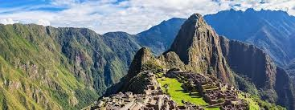

La capital histórica del Perú y cuna del Imperio Inca
Cusco fue la capital del Imperio Inca y hoy en día es un importante destino turístico reconocido por su riqueza arqueológica, historia viva y tradiciones andinas.
El Cusco celebra el Inti Raymi, una de las fiestas más importantes del calendario andino. Sus calles coloniales y su gastronomía reflejan la unión entre la herencia inca y española.